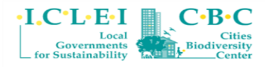
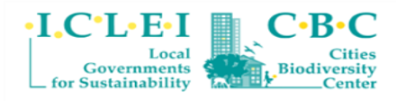

Resta agora a questão sobre como a política brasileira vêm tratando questões que envolvem as cidades
sustentáveis e também entender a atualidade do tema para o contexto imediato.
Para tanto, partimos da ideia de Política Verde. Desde a Rio 92, que se tratou de uma Conferência da ONU
sobre o Meio Ambiente e Desenvolvimento, ocorrida no Rio de Janeiro, o surgimento de pautas envolvendo o
desenvolvimento sustentável e, por consequência, a ideia de cidades sustentáveis (por mais que os ODS
ainda não tivessem sido formuladas) foi se intensificando nas agendas políticas.
Dessa maneira, hoje em dia, projetos que prezem por uma sociedade ecologicamente sustentável e baseada em
boa gestão social estão englobados nas agendas verdes de candidatos, a exemplo do que se pode ver, em
alguns dos que são formados pelo programa RenovaBR.
Sabe-se também que as cidades sustentáveis são extremamente importantes em qualquer contexto, mais ainda
no de excepcionalidade em que nos encontramos, visto a pandemia que se instaurou em 2020 e o crescente
alerta climático já levantado por várias organizações mundiais. Diante disso, o Programa das Nações
Unidas para o Meio Ambiente (PNUMA) alerta para a necessidade de um planejamento urbano sustentável.
É estimado que 90% de todos os casos de coronavírus tenham ocorrido nas cidades e, diante disso,
entende-se o quão importante é que se construam centros urbanos mais resilientes, inclusivos e
sustentáveis. A pandemia do coronavírus, bem como a urgência das mudanças climáticas, tem seu cerne nos
centros urbanos. Logo, ações que tornem os sistemas de saúde mais eficientes, que ajudem a diminuir a
concentração absurda de pessoas nos transportes públicos e amenizem os índices de poluição estão
englobadas na iniciativa das cidades sustentáveis.
Sites para Conhecer Mais
 
